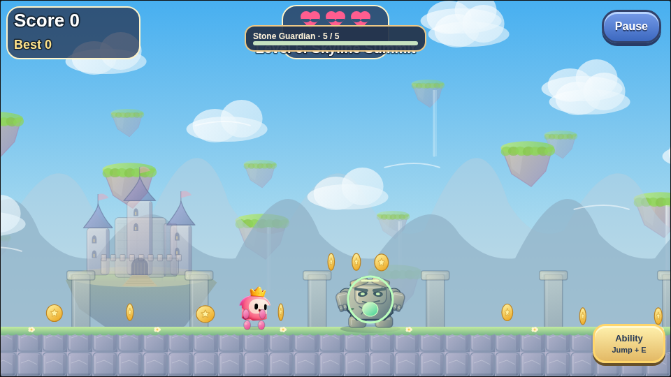
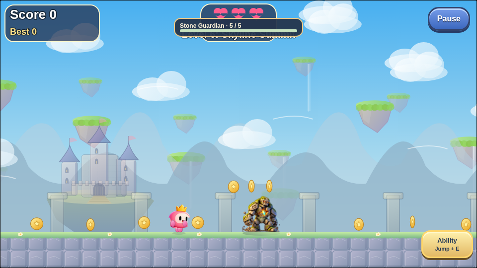

Stage I: owner review checkpoint
Painted Hopper is an isolated approval study. C3 Guardian is an opt-in gameplay preview. The current playable game retains the five existing heroes and all six maps, movement, powers and progression.
C3 Guardian gameplay preview
Enable Settings → “Stage I preview — C3 Guardian and title”. Compare the unchanged 68×64 contact rectangle, 5 HP, 2.8-second opening and one damage point per opening. C3 is kept readable in its source orientation; armor is never mirrored.

Verified base: external vulnerability ring.
C3 preview: anatomical exposed core, no external ring.The video is a named low-HP combat fixture with an injected legal final hit to expose the collapse. It is not a normal-input completion run. Full no-power routes are tested separately.
Carved source detail is available in the retained C3 PNG. The runtime derives from the owner’s inline reference using image generation; it is not claimed to be an original-attachment byte copy. Source/runtime hashes and pose rectangles are in the art manifest.
Original stone Foley listening samples
These are locally synthesized effects, routed through Effects volume. Signal/gain tests pass; audible quality and device speakers remain for human review. Full music A/B arrangements remain a later approval checkpoint.
Existing heroes: corrected walking
Actual native 844×390 browser recordings from ordinary Sunny Meadow spawn: right, stop, left, pause/resume and jump. Existing artwork, real timed keyboard input, desktop touch emulation. No candidate Hopper overlay or altered world.
HopperMintyEmberNovaBolt
Playable existing-hero game · Test instructions · Verification and outstanding items
Physical Android/iOS, audible quality, human Windows/DPI and art acceptance are not implied by automated evidence. No merge, release, tag or deployment.